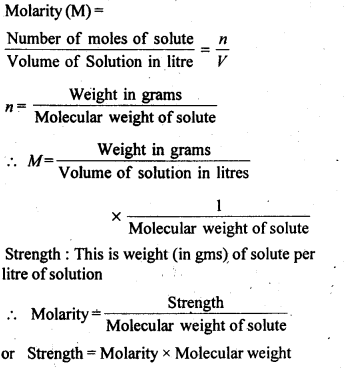
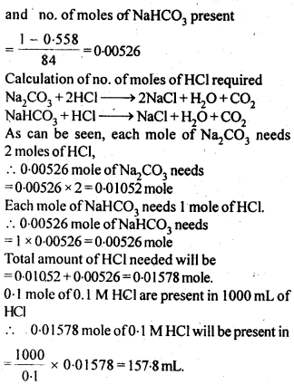
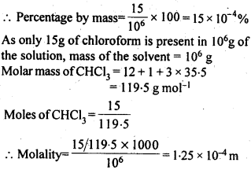

NCERT Solutions For Class 12 Chemistry Chapter 2 Solutions
Topics and Subtopics in NCERT Solutions for Class 12 Chemistry Chapter 2 Solutions:
| Section Name | Topic Name |
| 2 | Solutions |
| 2.1 | Types of Solutions |
| 2.2 | Expressing Concentration of Solutions |
| 2.3 | Solubility |
| 2.4 | Vapour Pressure of Liquid Solutions |
| 2.5 | Ideal and Non-ideal Solutions |
| 2.6 | Colligative Properties and Determination of Molar Mass |
| 2.7 | Abnormal Molar Masses |
NCERT TEXTBOOK QUESTIONS SOLVED
2.1. Calculate the mass percentage of benzene (C6H6) and carbon tetrachloride (CCl4) if 22 g of benzene is dissolved in 122 g of carbon tetrachloride.
Ans: Mass of solution = Mass of C6H6 + Mass of CCl4
= 22 g+122 g= 144 g
Mass % of benzene = 22/144 x 100 =15.28 %
Mass % of CCl4 = 122/144 x 100 = 84.72 %
2.2. Calculate the mole fraction of benzene in solution containing 30% by mass in carbon tetrachloride.
Ans: 30% by mass of C6H6 in CCl4 => 30 g C6H6 in 100 g solution
.’. no. of moles of C6H6,(nC6h6) = 30/78 = 0.385
2.3. Calculate the molarity of each of the following solutions
(a) 30 g of Co(NO3)26H2O in 4·3 L of solution
(b) 30 mL of 0-5 M H2SO4 diluted to 500 mL.
Ans:

2.4. Calculate the mass of urea (NH2CONH2) required in making 2.5 kg of 0.25 molal aqueous solution.
Ans: 0.25 Molal aqueous solution to urea means that
moles of urea = 0.25 mole
mass of solvent (NH2CONH2) = 60 g mol-1
.’. 0.25 mole of urea = 0.25 x 60=15g
Mass of solution = 1000+15 = 1015g = 1.015 kg
1.015 kg of urea solution contains 15g of urea
.’. 2.5 kg of solution contains urea =15/1.015 x 2.5 = 37 g
2.5. Calculate
(a) molality
(b) molarity and
(c) mole fraction of KI if the density of 20% (mass/mass) aqueous KI solution is 1·202 g mL-1.
Ans:
Step I. Calculation of molality of solution
Weight of KI in 100 g of the solution = 20 g
Weight of water in the solution = 100 – 20 = 80 g = 0-08 kg
Molar mass of KI = 39 + 127 = 166 g mol-1.
Step II. Calculation of molarity of solution
Step III. Calculation of mole fraction of Kl
2.6. H2 S, a toxic gas with rotten egg like smell, is used for the qualitative analysis. If the solubility of H2S in water at STP is 0.195 m, calculate Henry’s law constant.
Ans: Solubility of H2S gas = 0.195 m
= 0.195 mole in 1 kg of solvent
1 kg of solvent = 1000g
2.7. Henry’s law constant for CO2 in water is 1.67 x 108 Pa at 298 K. Calculate the quantity of CO2 in 500 mL of soda water when packed under 2.5 atm CO2 pressure at 298 K.
Ans.:
2.8 The vapour pressures of pure liquids A and B are 450 mm and 700 mm of Hg respectively at 350 K. Calculate the composition of the liquid mixture if total vapour pressure is 600 mm of Hg. Also find the composition in the vapour phase.
Ans:
Vapour pressure of pure liquid A (\({ P }_{ A }^{ \circ }\)) = 450 mm
Vapour pressure of pure liquid B (\({ P }_{ B }^{ \circ }\)) = 700 mm
Total vapour pressure of the solution (P) = 600 mm
2.9. Vapour pressure of pure water at 298 K is 23.8 m m Hg. 50 g of urea (NH2CONH2) is dissolved in 850 g of water. Calculate the vapour pressure of water for this solution and its relative lowering.
Ans:
2.10. Boiling point of water at 750 mm Hg is 99.63°C. How much sucrose is to be added to 500 g of water such that it boils at 100°C.
Ans:
2.11 Calculate the mass of ascorbic acid (vitamin C, C6H8O6) to be dissolved in 75 g of acetic acid to lower its melting point by 1·5°C. (Kf for CH3COOH) = 3·9 K kg mol-1)
Ans:
2.12. Calculate the osmotic pressure in pascals exerted by a solution prepared by dissolving 1.0 g of polymer of molar mass 185,000 in 450 mL of water at 37°C.
Ans:
NCERT EXERCISES
2.1. Define the terra solution. How many types of solutions are formed? Write briefly about each type with an example.
Sol: A solution is a homogeneous mixture of two or more chemically non-reacting substances. Types of solutions: There are nine types of solutions.
Types of Solution Examples
Gaseous solutions
(a) Gas in gas Air, mixture of 02 and N2, etc.
(b) Liquid in gas Water vapour
(c) Solid in gas Camphor vapours in N2 gas, smoke etc.
Liquid solutions
(a) Gas in liquid C02 dissolved in water (aerated water), and 02 dissolved in water, etc.
(b) Liquid in liquid Ethanol dissolved in water, etc.
(c) Solid in liquid Sugar dissolved in water, saline water, etc.
Solid solutions
(a) Gas in solid Solution of hydrogen in palladium
(b) Liquid in solid Amalgams, e.g., Na-Hg
(c) Solid in solid Gold ornaments (Cu/Ag with Au)
2.2. Suppose a solid solution is formed between two substances, one whose particles are very large and the other whose particles are very small. What type of solid solution is this likely to be ?
Sol: The solution likely to be formed is interstitial solid solution.
2.3 Define the following terms:
(i) Mole fraction
(ii) Molality
(iii) Molarity
(iv) Mass percentage
Sol: (i) Mole fraction: It is defined as the ratio of the number of moles of the solute to the total number of moles in the solution. If A is the number of moles of solute dissolved in B moles of solvent, then Mole fraction of solute
(ii) Molality: It is defined as die number of moles of a solute present in 1000g (1kg) of a solvent.
NOTE: Molality is considered better way of expressing concentration of solutions, as compared to molarity because molality does not change with change in temperature since the mass of solvent does not vary with temperature,
(iii) Molarity: It is defined as the number of moles of solute present in one litre of solution.

NOTE: Molarity is the most common way of expressing concentration of a solution in laboratory. However, it has one disadvantage. It changes with temperature because volume of a solution alters due to expansion and contraction of the liquid with temperature.
(iv) Mass percentage: It is the amount of solute in grams present in 100g of solution.
2.4. Concentrated nitric acid used in the laboratory work is 68% nitric acid by mass in aqueous solution. What should be the molarity of such a sample of acid if the density of the solution is 1·504 g mL-1 ?
Sol: Mass of HNO3 in solution = 68 g
Molar mass of HNO3 = 63 g mol-1
Mass of solution = 100 g
Density of solution = 1·504 g mL-1
2.5. A solution of glucose in water is labelled as 10% w/w, what would be the molality and mole fraction of each component in the solution? If the density of solution is 1 .2 g m L-1, then what shall be the molarity of the solution?
Sol: 10 percent w/w solution of glucose in water means 10g glucose and 90g of water.
Molar mass of glucose = 180g mol-1 and molar mass of water = 18g mol-1

2.6. How many mL of 0.1 M HCl are required to react completely with 1 g mixture of Na2C03 and NaHCO3 containing equimolar amounts of both?
Sol: Calculation of no. of moles of components in the mixture.

2.7. Calculate the percentage composition in terms of mass of a solution obtained by mixing 300 g of a 25% and 400 g of a 40% solution by mass.
Sol:
2.8. An antifreeze solution is prepared from 222.6 g of ethylene glycol, (C2 H6O2 ) and200 g of water. Calculate the molality of the solution. If the density of the solution is 1.072 g mL-1, then what shall be the molarity of the solution?
Sol:
2.9. A sample of drinking water was found to be severely contaminated with chloroform (CHCl3), supposed to be a carcinogen. The level of contamination was 15 ppm (by mass).
(i) express this in percent by mass.
(ii) determine the molality of chloroform in the water sample.
Sol: 15 ppm means 15 parts in million (106) by mass in the solution.

2.10. What role does the molecular interaction play in solution of alcohol in water?
Sol: In case of alcohol as well as water, the molecules are interlinked by intermolecular hydrogen bonding. However, the hydrogen bonding is also present in the molecules of alcohol and water in the solution but it is comparatively less than both alcohol and water. As a result, the magnitude of attractive forces tends to decrease and the solution shows positive deviation from Raoult’s Law. This will lead to increase in vapour pressure of the solution and also decrease in its boiling point.
2.11. Why do gases always tend to be less soluble in liquids as the temperature is raised?
Sol: When gases are dissolved in water, it is accompanied by a release of heat energy, i.e., process is exothermic. When the temperature is increased, according to Lechatlier’s Principle, the equilibrium shifts in backward direction, and thus gases becomes less soluble in liquids.
2.12. State Henry’s law and mention some of its important applications.
Sol:
Henry’s law: The solubility of a gas in a liquid at a particular temperature is directly proportional to the pressure of the gas in equilibrium with the liquid at that temperature.
or
The partial pressure of a gas in vapour phase is proportional to the mole fraction of the gas (x) in the solution. p = KHX
where KH is Henry’s law constant.
Applications of Henry’s law :
(i) In order to increase the solubility of CO2 gas in soft drinks and soda water, the bottles are normally sealed under high pressure. Increase in pressure increases the solubility of a gas in a solvent according to Henry’s Law. If the bottle is opened by removing the stopper or seal, the pressure on the surface of the gas will suddenly decrease. This will cause a decrease in the solubility of the gas in the liquid i.e. water. As a result, it will rush out of the bottle producing a hissing noise or with a fiz.
(ii) As pointed above, oxygen to be used by deep sea divers is generally diluted with helium inorder to reduce or minimise the painfril effects during decompression.
(iii) As the partial pressure of oxygen in air is high, in lungs it combines with haemoglobin to form oxyhaemoglobin. In tissues, the partial pressure of oxygen is comparatively low. Therefore, oxyhaemoglobin releases oxygen in order to carry out cellular activities.
2.13. The partial pressure of ethane over a solution containing 6.56 × 10-3 g of ethane is 1 bar. If the solution contains 5.00 × 10-2 g of ethane, then what shall be the partial pressure of the gas?
Sol:
2.14. According to Raoult’s law, what is meant by positive and negative deviaitions and how is the sign of ∆solH related to positive and negative deviations from Raoult’s law?
Sol: Solutions having vapour pressures more than that expected from Raoult’s law are said to exhibit positive deviation. In these solutions solvent – solute interactions are weaker and ∆solH is positive because stronger A – A or B – B interactions are replaced by weaker A – B interactions. Breaking of the stronger interactions requires more energy & less energy is released on formation of weaker interactions. So overall ∆sol H is positive. Similarly ∆solV is positive i.e. the volume of solution is some what more than sum of volumes of solvent and solute.
So there is expansion in volume on solution formation.
Similarly in case of solutions exhibiting negative deviations, A – B interactions are stronger than A-A&B-B. So weaker interactions are replaced by stronger interactions so , there is release of energy i.e. ∆sol H is negative.
2.15. An aqueous solution of 2 percent non-volatile solute exerts a pressure of 1·004 bar at the boiling point of the solvent. What is the molecular mass of the solute ?
Sol:
According to Raoult’s Law,
2.16 Heptane and octane form an ideal solution. At 373 K, the vapour pressures of the two liquid components are 105.2 kPa and 46.8 kPa respectively. What will be the vapour pressure of a mixture of 26.0 g of heptane and 35.0 g of octane?
Sol.
2.17. The vapour pressure of water is 12.3 kPa at 300 K. Calculate vapour pressure of 1 molal solution of a non-volatile solute in it
Sol: 1 molal solution of solute means 1 mole of solute in 1000g of the solvent.
2.18. Calculate the mass of a non-volatile solute (molecular mass 40 g mol-1) that should be dissolved in 114 g of octane to reduce its pressure to 80%. (C.B.S.E. Outside Delhi 2008)
Sol: According to Raoult’s Law,
2.19. A solution containing 30g of non-volatile solute exactly in 90 g of water has a vapour pressure of 2.8 kPa at 298 K. Further, 18g of water is then added to the solution and the new of vapour pressure becomes 2.9 kPa at 298 K. Calculate
(i) molar mass of the solute.
(ii) vapour pressure of water at 298 K.
Sol: Let the molar mass of solute = Mg mol-1
2.20. A 5% solution (by mass) of cane sugar in water has freezing point of 271 K. Calculate the freezing point of 5% glucose in water if freezing point of pure water is 273.15 K.
Sol: Mass of sugar in 5% (by mass) solution means 5gin 100g of solvent (water)

2.21. Two elements A and B form compounds having formula AB2 and AB4. When dissolved in 20g of benzene (C6H6), 1 g of AB2 lowers the freezing point by 2.3 K whereas 1.0 g of AB4 lowers it by 1.3 K. The molar depression constant for benzene is 5.1 K kg mol-1. Calculate atomic masses of A and B.
Sol:
2.22. At 300 K, 36 g glucose present per litre in its solution has osmotic pressure of 4·98 bar. If the osmotic pressure of the solution is 1·52 bar at the same temperature, what would be its concentration?
Sol:

2.23. Suggest the most important type of intermolecular attractive interaction in the following pairs:
(i) n-hexane and n-octane
(ii) I2 and CCl4.
(iii) NaCl04 and water
(iv) methanol and acetone
(v) acetonitrile (CH3CN) and acetone (C3H60)
Sol: (i) Both w-hexane and n-octane are non-polar. Thus, the intermolecular interactions will be London dispersion forces.
(ii) Both I2 and CCl4 are non-polar. Thus, the intermolecular interactions will be London dispersion forces.
(iii) NaCl04 is an ionic compound and gives Na+ and Cl04– ions in the Solution. Water is a polar molecule. Thus, the intermolecular interactions will be ion-dipole interactions.
(iv) Both methanol and acetone are polar molecules. Thus, intermolecular interactions will be dipole-dipole interactions.
(v) Both CH3CN and C3H6O are polar molecules. Thus, intermolecular interactions will be dipole-dipole interactions.
2.24. Based on solute solvent interactions, arrange the following in order of increasing solubility in n-octane and explain. Cyclohexane, KCl, CH3OH, CH3CN.
Sol: n-octane (C8H18) is a non-polar liquid and solubility is governed by the principle that like dissolve like. Keeping this in view, the increasing order of solubility of different solutes is:
KCl < CH3OH < CH3C=N < C6H12 (cyclohexane).
2.25. Amongst the following compounds, identify which are insoluble, partially soluble and highly soluble in water?
(i) phenol
(ii) toluene
(iii) formic acid
(iv) ethylene glycol
(v) chloroform
(vi) pentanol
Sol: (i) Phenol (having polar – OH group) – Partially soluble.
(ii) Toluene (non-polar) – Insoluble.
(iii) Formic acid (form hydrogen bonds with water molecules) – Highly soluble.
(iv) Ethylene glycol (form hydrogen bonds with water molecules) Highly soluble.
(v) Chloroform (non-polar)- Insoluble.
(vi) Pentanol (having polar -OH) – Partially soluble.
2.26. If the density of lake water is 1·25 g mL-1, and it contains 92 g of Na+ ions per kg of water, calculate the molality of Na+ ions in the lake. (C.B.S.E. Outside Delhi 2008)
Sol:
2.27. If the solubility product of CuS is 6 x 10-16, calculate the maximum molarity of CuS in aqueous solution.
Sol:
2.28. Calculate the mass percentage of aspirin (C9H8O4 in acetonitrile (CH3CN) when 6.5g of CHO is dissolved in 450 g of CH3CN.
Solution:
2.29. Nalorphene (C19H21NO3), similar to morphine, is used to combat withdrawal symptoms in narcotic users. Dose of nalorphene generally given is 1.5 mg. Calculate the mass of 1.5 x 10-3 m aqueous solution required for the above dose.
Solution:
2.30. Calculate the amount of benzoic acid (C5H5COOH) required for preparing 250 mL of 0· 15 M solution in methanol.
Solution:
2.31. The depression in freezing point of water observed for the same amount of acetic acid, trichloroacetic acid and trifluoroacetic acid increases in the order given above. Explain briefly.
Solution:
Fluorine being more electronegative than chlorine has the highest electron withdrawing inductive effect. Thus, triflouroacetic acid is the strongest trichloroacetic acid is second most and acetic acid is the weakest acid due to absence of any electron withdrawing group. Thus, F3CCOOH ionizes to the largest extent while CH3COOH ionizes to minimum extent in water. Greater the extent of ionization greater is the depression in freezing point. Hence, the order of depression in freezing point will be CH3COOH < Cl3CCOOH < F3CCOOH.
2.32. Calculate the depression in the freezing point of water when 10g of CH3CH2CHClCOOH is added to 250g of water. Ka = 1.4 x 1o-3 Kg = 1.86 K kg mol-1.
Solution:

2.33. 19.5g of CH2FCOOH is dissolved in 500g of water. The depression in the freezing point of water observed is 1.0°C. Calculate the van’s Hoff factor and dissociation constant of fluoroacetic acid.
Solution:
2.34. Vapour pressure of water at 293 K is 17·535 mm Hg. Calculate the vapour pressure of water at 293 K when 25 g of glucose is dissolved in 450 g of water.
Solution:
According to Raoult’s Law,
2.35. Henry’s law constant for the molality of methane in benzene at 298 K is 4.27 x 105 mm Hg. Calculate the solubility of methane in benzene at 298 K under 760 mm Hg.
Solution:
2.36. 100g of liquid A (molar mass 140 g mol-1) was dissolved in 1000g of liquid B (molar mass 180g mol-1). The vapour pressure of pure liquid B was found to be 500 torr. Calculate the vapour pressure of pure liquid A and its vapour pressure in the solution if the total vapour pressure of the solution is 475 torr.
Solution:
2.37. Vapour pressures of pure acetone and chloroform at 328 K are 741.8 mm Hg and 632.8 mm Hg respectively. Assuming that they form ideal solution over the entire range of composition, plot Ptotal, Pchlroform and Pacetone as a function of χacetone. The experimental data observed for different compositions of mixtures is:
Plot this data also on the same graph paper. Indicate whether it has positive deviation or negative deviation from the ideal solution.

Solution:

2.38. Benzene and toluene form ideal solution over the entire range of composition. The vapour pressure of pure benzene and toluene at 300 K are 50.71 mm Hg and 32.06 mm Hg respectively. Calculate the mole fraction of benzene in vapour phase if 80g of benzene is mixed with 100g of toluene.
Solution:
2.39. The air is a mixture of a number of gases. The major components are oxygen and nitrogen with an approximate proportion of 20% is to 79% by volume at 298 K. The water is in equilibrium with air at a pressure of 10 atm. At 298 K if Henry’s law constants for oxygen and nitrogen are 3.30 x 107 mm and 6.51 x 107 mm respectively, calculate the composition of these gases in water.
Solution:
2.40. Determine the amount of CaCl2 (i = 2.47) dissolved in 2.5 litre of water such that its osmotic pressure is 0.75 atm at 27°C.
Solution:

2.41. Determine the osmotic pressure of a solution prepared by dissolving 25 mg of K2SO4 in 2 litre of water at 25°C, assuming that it is completely dissociated. (C.B.S.E. 2013)
Solution:
Step I. Calculation of Van’t Hoff factor (i)
K2SO4 dissociates in water as :

More Resources for CBSE Class 12: